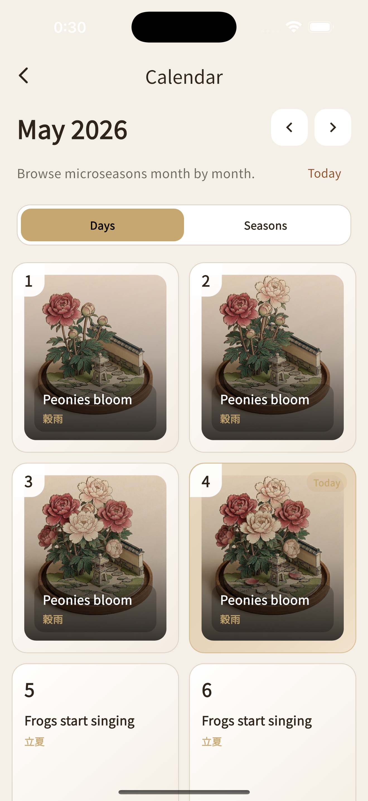
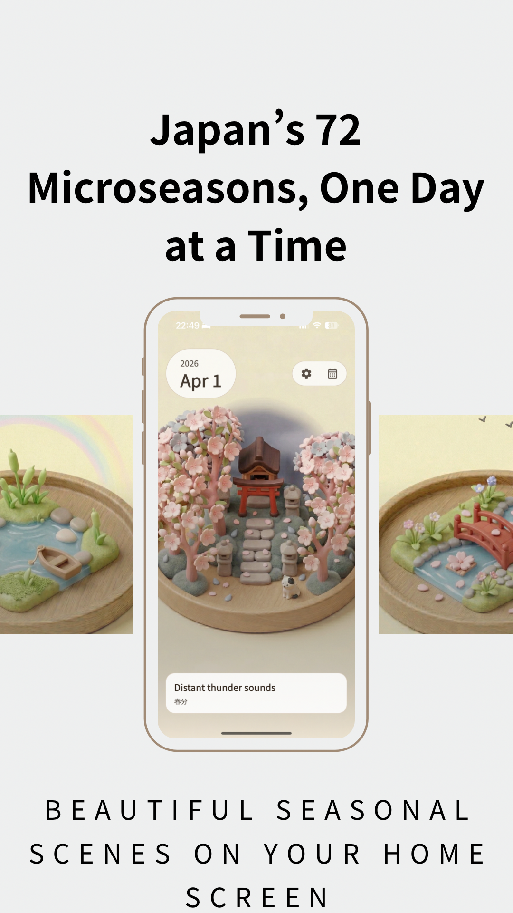
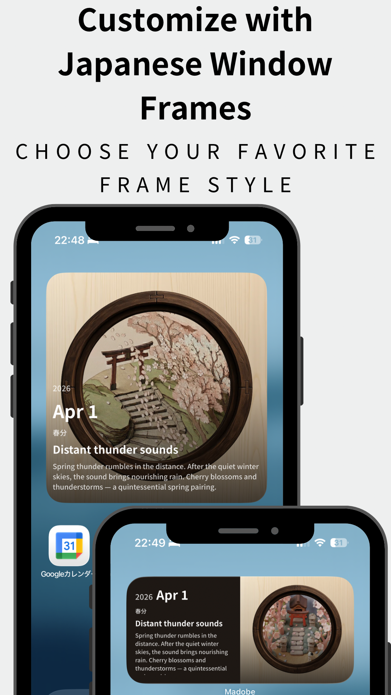
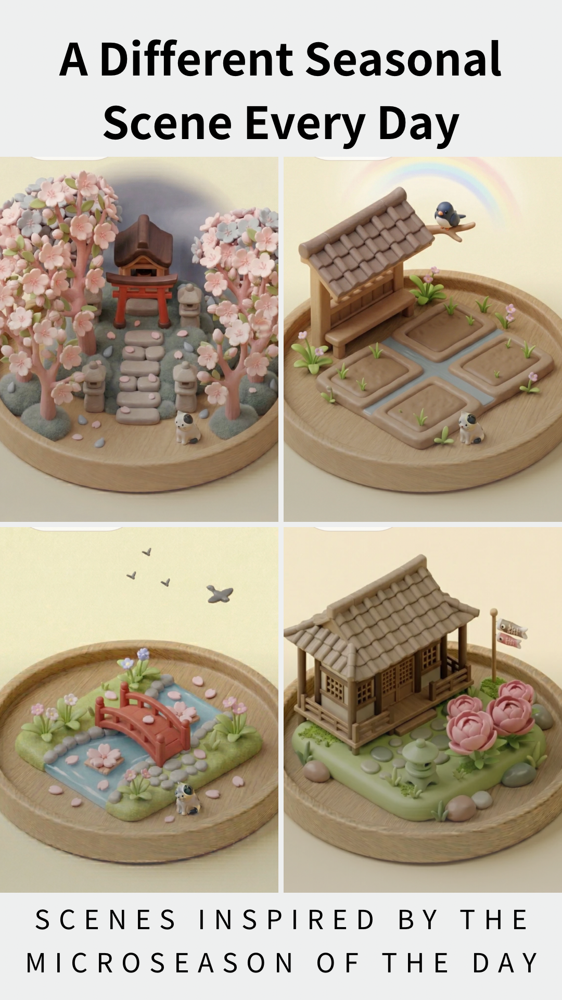
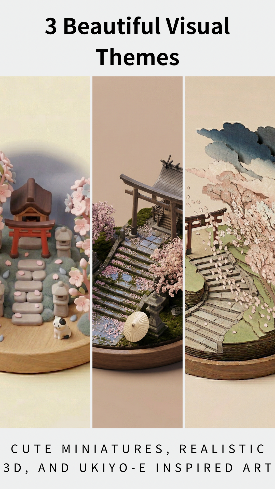
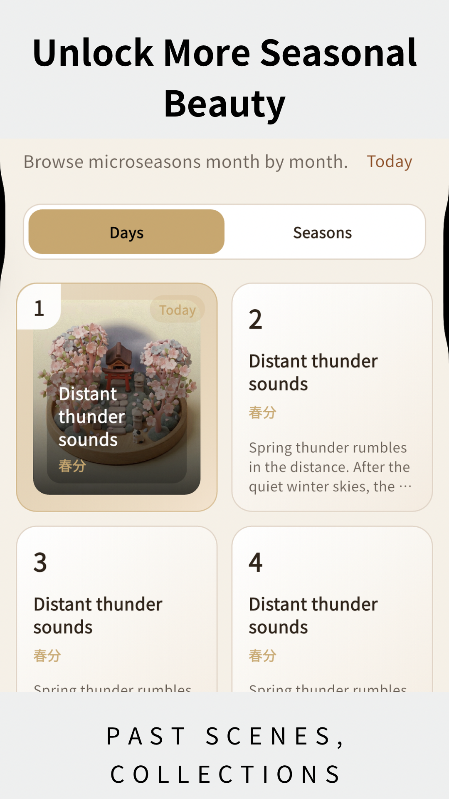

For iPhone · 72 Microseasons
72 windows
onto the living year
七十二候を、毎日の窓辺に
Japan has 72 seasons. Madobe delivers them to your iPhone home screen as a cute miniature scene that changes every day.



七十二候を、毎日の窓辺に
Japan has 72 seasons. Madobe delivers them to your iPhone home screen as a cute miniature scene that changes every day.

"The Japanese calendar doesn't divide the year into four seasons — it listens to it in 72 distinct voices."
Japan's seasonal culture has drawn global attention strongly enough to be recognized by UNESCO as Intangible Cultural Heritage.
Madobe — observing the year, five days at a time
The Calendar
Rooted in ancient Chinese astronomy and refined in Japan, the 七十二候 (shichijūnikō) divides the solar year into 24 solar terms, each split into three five-day microseasons — 72 in total, each with a poetic name describing what is happening in nature right now.
Daily Window
Not a notification. A quiet window on your home screen — a new miniature scene each day, with a short reading and a kigo to glance at, then move on.
Plans
The daily window is free. Madobe Pro adds Japanese window frames, scene themes, time travel, wallpaper export, and removes ads.
Download Madobe and discover which of Japan's 72 microseasons is alive in the world right now.
Download on the App StoreiPhone · iOS 16+




